# install.packages("ggplot2")
library(ggplot2)
library(here)Activity 3: Data visualization: fundamentals of ggplot
Jan. 12th, 2026, Calvin Munson
National Park Visitation Data
Welcome! Today’s activity is all about the basics of making plots. We will be using a “package” called ggplot2. More on packages later, but packages are simply collections of pre-written functions that someone else wrote and wants to share with the world (lucky us!). The ggplot2 package is all about making nice graphs (don’t ask me where ggplot1 went).
You will submit two outputs for this activity:
A Quarto document with all of your R code that has been rendered to PDF. Please include all of the code that appears in this document, in addition to adding your own code in the “Q#” sections.
A plot and research question from the final section
Setting up
First, let’s install and load our packages. You should already have the here package installed from last time, but you may not have ggplot2 installed. Install it in your console. Then, read it in from the library in your code.
Reading in data
Next, let’s read in our data. Use the read.csv() function to read in the dataframe. The name of the dataframe needs to be in quotes, and because of the here package, R will recognize the .csv file if it is in the same folder as your R script. Store the data as as data object called ci_np.
Also, use the head() function to display the first handful of rows of the stored dataframe
# Read in the data and store as "ci_np" data object
ci_np <- read.csv("ci_np.csv")
# display the first 6 rows
head(ci_np) region state code park_name type visitors year
1 PW CA CHIS Channel Islands National Park National Park 1200 1963
2 PW CA CHIS Channel Islands National Park National Park 1500 1964
3 PW CA CHIS Channel Islands National Park National Park 1600 1965
4 PW CA CHIS Channel Islands National Park National Park 300 1966
5 PW CA CHIS Channel Islands National Park National Park 15700 1967
6 PW CA CHIS Channel Islands National Park National Park 31000 1968Great! It looks like we have a dataframe with 7 columns of data. This dataset is for the Channel Islands National Park visitation data. It looks like the first 5 columns are categorical data, while the last two (visitors and year) are continuous. Every row (every datapoint) is the number of visitors for a given National Park in a given year.
Q1: Fetch column names
Dataframes can be very large and have many columns; it is sometimes useful to be able to concisely see all of the column names of a dataframe. Just like with the head() function earlier, use the colnames() function to retrieve and look at a vector of all of the column names of this dataframe.
Graphing basics
Data and axes
Ok, now that we’ve checked out the data a little bit, let’s begin graphing! Whenever we want to graph something, we use the function: ggplot(). This sets up our graphing space. Let’s give the ggplot function some data:
ggplot(data = ci_np)
What happens? A plotting window appears, but it’s empty! That’s because we haven’t told the function which columns of data to display.
Here is where we can come up with a question that we want to answer. Let’s ask: How does the number of visitors to the Channel Islands National Park change over time?
To tell ggplot what to plot, we need to designate the “aesthetics” of the graph using the aes() function. The aesthetics tell ggplot() how the graph is going to look. Most importantly, you need an x and y axis!
Let’s try this again with ggplot’s “mapping” argument. To answer our question, we will plot the two continuous variables: number of visitors to the park and year. Year will be on the x-axis, as our predictor variable, while visitors will be on the y-axis, as our response variable. Remember to spell/capitalize the column names correctly here!
ggplot(data = ci_np, mapping = aes(x = year, y = visitors))
Now what has changed? We have axis titles and numbers - great! But why can’t we see any of the data? That’s because we need to tell ggplot what kind of graph we want.
We do this using the built-in series of geom (graph type) functions. These have the format of geom_*(), where * is a type of graph. For example, geom_point() is a scatterplot, geom_line() is a line graph, geom_col() is a column graph.
We add layers (including geoms) to a ggplot by putting a “+” after the closed parenthesis of the ggplot() function and then creating a new line with the geom we want.
Let’s make it a scatterplot, meaning we have a point for every combination of year and visitors, using the geom_point() function.
ggplot(data = ci_np, mapping = aes(x = year, y = visitors)) +
geom_point()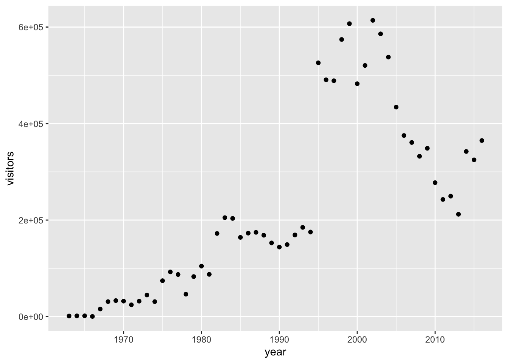
Now let’s try again using a column graph:
ggplot(data = ci_np, mapping = aes(x = year, y = visitors)) +
geom_col()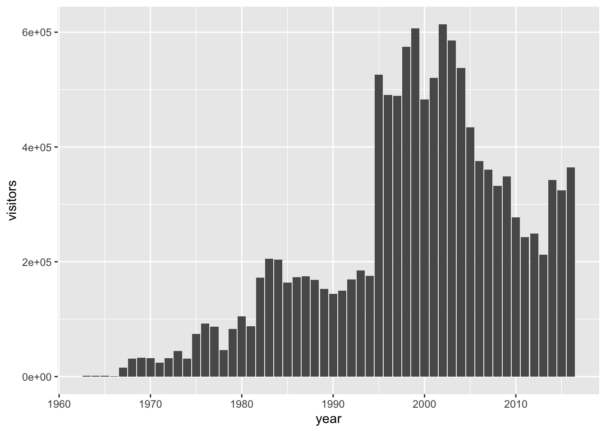
Q2: Create a line plot
Replicate the same graph, but this time with a line graph.
You can add multiple geoms to one graph by simply adding another line with a +. This layers the additional geoms on top of the ones that come before it, so if you want to change the order of the geoms (e.g. putting the line underneath the points, which may be relevant if you add color…), just make sure the “bottom” layer comes first in the code.
ggplot(data = ci_np, mapping = aes(x = year, y = visitors)) +
geom_point() +
geom_line()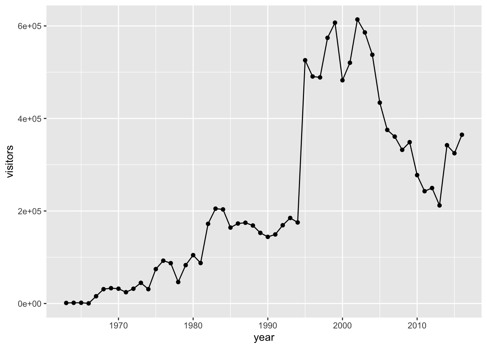
Another useful geom is geom_smooth(), which helps visualize patterns in the data by fitting some basic models to the data (note: this does not replace doing statistics on the data!)
ggplot(data = ci_np, mapping = aes(x = year, y = visitors)) +
geom_point() +
geom_smooth()`geom_smooth()` using method = 'loess' and formula = 'y ~ x'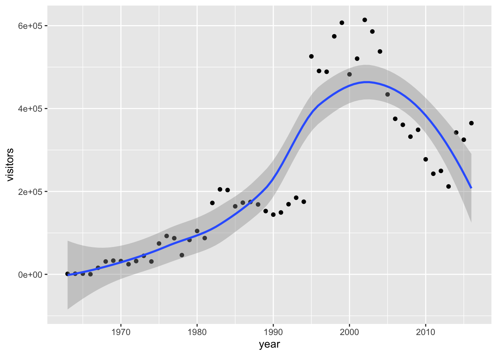
geom_smooth() has a method = argument, which, by default, uses a method called “loess” (note that it gives you a little message saying this). “loess” creates a dynamic line that follows the data like a moving average. If you change this method to “lm”, the smoothing line becomes a linear model line - a line with the formula y = mx + b. Try it!
Plotting only one variable
Sometimes we want to look at the distribution of a single continuous variable to ask how the values are distributed (are there mostly small values with a few large values as outliers?). We can do this using geom_histogram() or geom_density().
When we use these two functions, we only need to provide an x-axis in the aes() and can skip the y-axis. Let’s use a histogram to look at the distribution of the visitors variable:
ggplot(data = ci_np, mapping = aes(x = visitors)) +
geom_histogram()`stat_bin()` using `bins = 30`. Pick better value `binwidth`.
The geom_histogram() function takes all the values in the visitors column and plops them into bins, then counts up how many of the values fit into those bins. That count becomes the y-axis.
Alternately, we can use geom_density() which is a smoothed version of a histogram. It does the same thing but fits a line to it, calculating what’s called a “kernel density estimate”. Looks like the data in the visitors column is mostly small values, with a healthy handful of large values.
ggplot(data = ci_np, mapping = aes(x = visitors)) +
geom_density()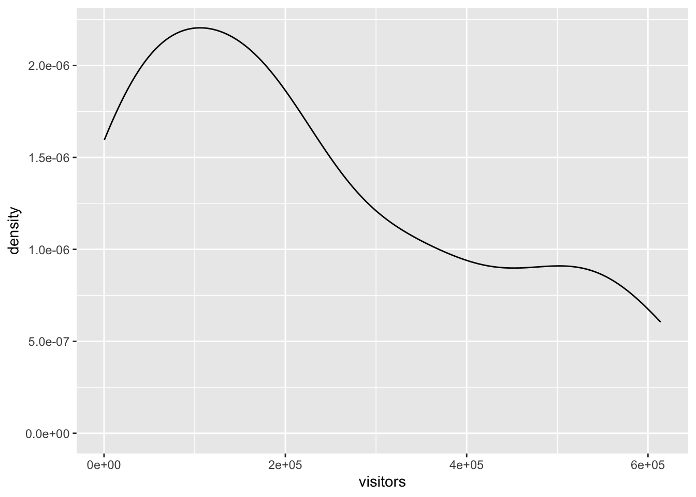
Customizing things
Graphs in ggplot are highly customizable. We can modify all sorts of aspects of this graph (MUCH more on this next class).
Some common arguments to modify aspects of the geoms are:
color =orcolour =: update point or line colorsfill =: update fill color for objects with areas (like columns and certain point shapes)linetype =: update the line type (dashed, long dash, etc.)shape =orpch =: update the point shape/stylesize =: update the element size (e.g. of points or line thickness)alpha =: update element opacity (1 = opaque, 0 = transparent)
Let’s start by changing the shape and the color of the points. The bottom of this handy cheatsheet has the possible shapes you can use, numbered 0 through 25: https://posit.co/wp-content/uploads/2022/10/data-visualization-1.pdf
We modify specific, unchanging aspects of the points within the geom_point function itself. What I mean by “unchanging” is that the color, shape, etc, is going to be consistent across all points in the graph.
ggplot(data = ci_np, mapping = aes(x = year, y = visitors)) +
geom_point(shape = 8, color = "blue")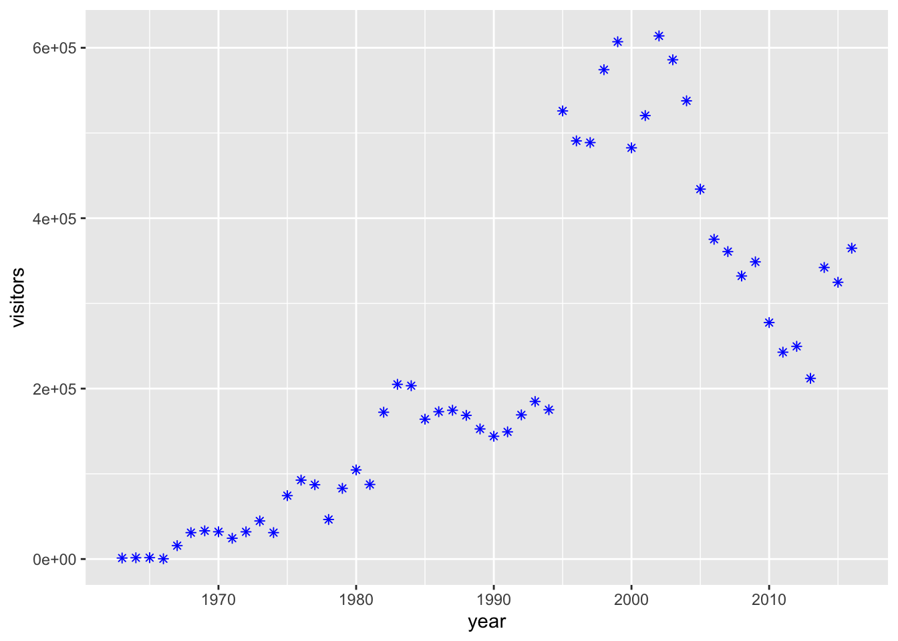
Sidenote: Leaving out argument names
R knows what order the arguments of functions should be in. Up until now, we have been defining the data and naming other arguments by explicitly saying ggplot(data = ci_np, mapping = aes(......)). However, you can omit the data = and mapping = as long as you keep the order consistent! I will omit them for the rest of this lesson.
ggplot(ci_np, aes(x = year, y = visitors)) +
geom_point(shape = 8, color = "blue")
Q3: Modify the lineplot
Let’s go back to the lineplot. Create the lineplot, but this time, with a dashed linetype and a different colored line.
Mapping other variables onto aesthetics
So far we’ve changed different elements (shape, color) of the geoms based on constant inputs (i.e. the color is the same for every single point). Often, though, we want to have different variables represented in ways other than the x and y axes, such as having different colored points for different categories of the data, or having points grow as another value does. To do that, we will map variables onto graph aesthetics, meaning we will change how an element on the graph looks based on a different variable.
Let’s practice by making the size of the points vary with the visitors column (which is also mapped onto our y-axis). When we want to customize a graph element based on a variable’s value, add the element argument within aes() in the appropriate geom_*() layer:
ggplot(ci_np, aes(x = year, y = visitors)) +
geom_point(aes(size = visitors))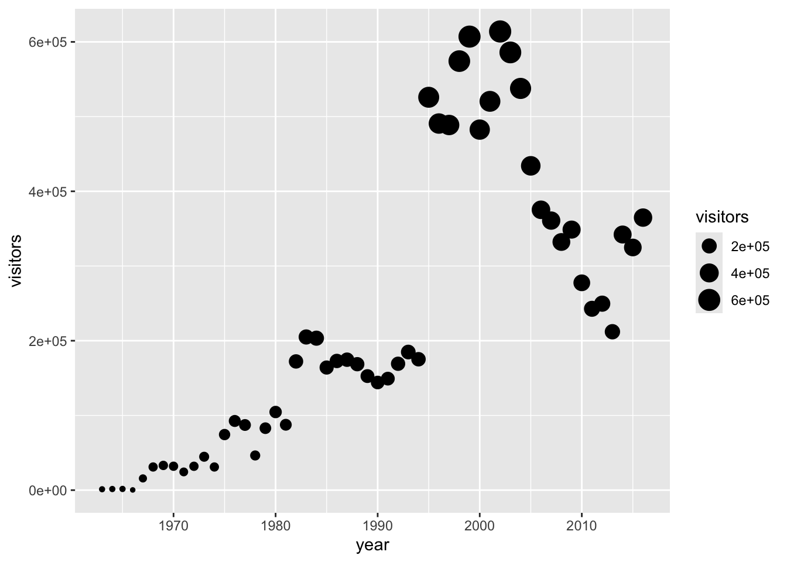
Neat! We can add in multiple aesthetics at once (though with this example, things are getting unnecessarily complicated… Making clear and concise graphs is an art!).
ggplot(ci_np, aes(x = year, y = visitors)) +
geom_point(aes(size = visitors,
color = visitors))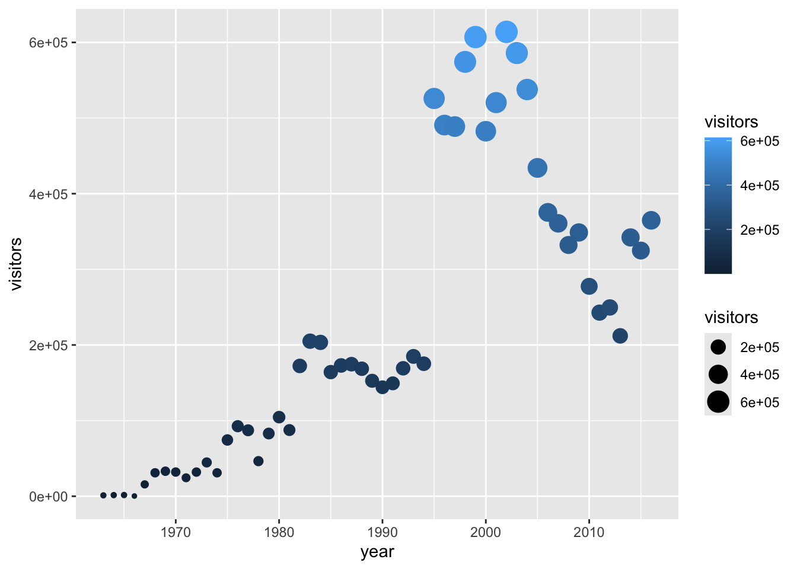
Lots of parks all at once
Q4: Reading in the new data
Let’s practice mapping additional aesthetics with an expanded dataset. We’ve been working with the ci_np dataset, which includes only Channel Islands National Park. The ca_np.csv dataset includes all California National Parks! Read this .csv file in and store it as a data object called ca_np
Once you’ve done that, let’s look at what parks are present in this new dataset. You can create a vector from a column, isolating all of its values in the order they appear in the dataframe, by putting a $ after the dataframe’s name: dataframe$columnname. Then, we can put that output within the unique() function to remove duplicate values and see what unique parks we have.
# Fetch the column only - not informative! Too many values!
ca_np$park_name [1] "Channel Islands National Park" "Channel Islands National Park"
[3] "Channel Islands National Park" "Channel Islands National Park"
[5] "Channel Islands National Park" "Channel Islands National Park"
[7] "Channel Islands National Park" "Channel Islands National Park"
[9] "Channel Islands National Park" "Channel Islands National Park"
[11] "Channel Islands National Park" "Channel Islands National Park"
[13] "Channel Islands National Park" "Channel Islands National Park"
[15] "Channel Islands National Park" "Channel Islands National Park"
[17] "Channel Islands National Park" "Channel Islands National Park"
[19] "Channel Islands National Park" "Channel Islands National Park"
[21] "Channel Islands National Park" "Channel Islands National Park"
[23] "Channel Islands National Park" "Channel Islands National Park"
[25] "Channel Islands National Park" "Channel Islands National Park"
[27] "Channel Islands National Park" "Channel Islands National Park"
[29] "Channel Islands National Park" "Channel Islands National Park"
[31] "Channel Islands National Park" "Channel Islands National Park"
[33] "Channel Islands National Park" "Channel Islands National Park"
[35] "Channel Islands National Park" "Channel Islands National Park"
[37] "Channel Islands National Park" "Channel Islands National Park"
[39] "Channel Islands National Park" "Channel Islands National Park"
[41] "Channel Islands National Park" "Channel Islands National Park"
[43] "Channel Islands National Park" "Channel Islands National Park"
[45] "Channel Islands National Park" "Channel Islands National Park"
[47] "Channel Islands National Park" "Channel Islands National Park"
[49] "Channel Islands National Park" "Channel Islands National Park"
[51] "Channel Islands National Park" "Channel Islands National Park"
[53] "Channel Islands National Park" "Channel Islands National Park"
[55] "Death Valley National Park" "Death Valley National Park"
[57] "Death Valley National Park" "Death Valley National Park"
[59] "Death Valley National Park" "Death Valley National Park"
[61] "Death Valley National Park" "Death Valley National Park"
[63] "Death Valley National Park" "Death Valley National Park"
[65] "Death Valley National Park" "Death Valley National Park"
[67] "Death Valley National Park" "Death Valley National Park"
[69] "Death Valley National Park" "Death Valley National Park"
[71] "Death Valley National Park" "Death Valley National Park"
[73] "Death Valley National Park" "Death Valley National Park"
[75] "Death Valley National Park" "Death Valley National Park"
[77] "Death Valley National Park" "Death Valley National Park"
[79] "Death Valley National Park" "Death Valley National Park"
[81] "Death Valley National Park" "Death Valley National Park"
[83] "Death Valley National Park" "Death Valley National Park"
[85] "Death Valley National Park" "Death Valley National Park"
[87] "Death Valley National Park" "Death Valley National Park"
[89] "Death Valley National Park" "Death Valley National Park"
[91] "Death Valley National Park" "Death Valley National Park"
[93] "Death Valley National Park" "Death Valley National Park"
[95] "Death Valley National Park" "Death Valley National Park"
[97] "Death Valley National Park" "Death Valley National Park"
[99] "Death Valley National Park" "Death Valley National Park"
[101] "Death Valley National Park" "Death Valley National Park"
[103] "Death Valley National Park" "Death Valley National Park"
[105] "Death Valley National Park" "Death Valley National Park"
[107] "Death Valley National Park" "Death Valley National Park"
[109] "Death Valley National Park" "Death Valley National Park"
[111] "Death Valley National Park" "Death Valley National Park"
[113] "Death Valley National Park" "Death Valley National Park"
[115] "Death Valley National Park" "Death Valley National Park"
[117] "Death Valley National Park" "Death Valley National Park"
[119] "Death Valley National Park" "Death Valley National Park"
[121] "Death Valley National Park" "Death Valley National Park"
[123] "Death Valley National Park" "Death Valley National Park"
[125] "Death Valley National Park" "Death Valley National Park"
[127] "Death Valley National Park" "Death Valley National Park"
[129] "Death Valley National Park" "Death Valley National Park"
[131] "Death Valley National Park" "Death Valley National Park"
[133] "Death Valley National Park" "Death Valley National Park"
[135] "Death Valley National Park" "Death Valley National Park"
[137] "Death Valley National Park" "Death Valley National Park"
[139] "Joshua Tree National Park" "Joshua Tree National Park"
[141] "Joshua Tree National Park" "Joshua Tree National Park"
[143] "Joshua Tree National Park" "Joshua Tree National Park"
[145] "Joshua Tree National Park" "Joshua Tree National Park"
[147] "Joshua Tree National Park" "Joshua Tree National Park"
[149] "Joshua Tree National Park" "Joshua Tree National Park"
[151] "Joshua Tree National Park" "Joshua Tree National Park"
[153] "Joshua Tree National Park" "Joshua Tree National Park"
[155] "Joshua Tree National Park" "Joshua Tree National Park"
[157] "Joshua Tree National Park" "Joshua Tree National Park"
[159] "Joshua Tree National Park" "Joshua Tree National Park"
[161] "Joshua Tree National Park" "Joshua Tree National Park"
[163] "Joshua Tree National Park" "Joshua Tree National Park"
[165] "Joshua Tree National Park" "Joshua Tree National Park"
[167] "Joshua Tree National Park" "Joshua Tree National Park"
[169] "Joshua Tree National Park" "Joshua Tree National Park"
[171] "Joshua Tree National Park" "Joshua Tree National Park"
[173] "Joshua Tree National Park" "Joshua Tree National Park"
[175] "Joshua Tree National Park" "Joshua Tree National Park"
[177] "Joshua Tree National Park" "Joshua Tree National Park"
[179] "Joshua Tree National Park" "Joshua Tree National Park"
[181] "Joshua Tree National Park" "Joshua Tree National Park"
[183] "Joshua Tree National Park" "Joshua Tree National Park"
[185] "Joshua Tree National Park" "Joshua Tree National Park"
[187] "Joshua Tree National Park" "Joshua Tree National Park"
[189] "Joshua Tree National Park" "Joshua Tree National Park"
[191] "Joshua Tree National Park" "Joshua Tree National Park"
[193] "Joshua Tree National Park" "Joshua Tree National Park"
[195] "Joshua Tree National Park" "Joshua Tree National Park"
[197] "Joshua Tree National Park" "Joshua Tree National Park"
[199] "Joshua Tree National Park" "Joshua Tree National Park"
[201] "Joshua Tree National Park" "Joshua Tree National Park"
[203] "Joshua Tree National Park" "Joshua Tree National Park"
[205] "Joshua Tree National Park" "Joshua Tree National Park"
[207] "Joshua Tree National Park" "Joshua Tree National Park"
[209] "Joshua Tree National Park" "Joshua Tree National Park"
[211] "Joshua Tree National Park" "Joshua Tree National Park"
[213] "Joshua Tree National Park" "Joshua Tree National Park"
[215] "Kings Canyon National Park" "Kings Canyon National Park"
[217] "Kings Canyon National Park" "Kings Canyon National Park"
[219] "Kings Canyon National Park" "Kings Canyon National Park"
[221] "Kings Canyon National Park" "Kings Canyon National Park"
[223] "Kings Canyon National Park" "Kings Canyon National Park"
[225] "Kings Canyon National Park" "Kings Canyon National Park"
[227] "Kings Canyon National Park" "Kings Canyon National Park"
[229] "Kings Canyon National Park" "Kings Canyon National Park"
[231] "Kings Canyon National Park" "Kings Canyon National Park"
[233] "Kings Canyon National Park" "Kings Canyon National Park"
[235] "Kings Canyon National Park" "Kings Canyon National Park"
[237] "Kings Canyon National Park" "Kings Canyon National Park"
[239] "Kings Canyon National Park" "Kings Canyon National Park"
[241] "Kings Canyon National Park" "Kings Canyon National Park"
[243] "Kings Canyon National Park" "Kings Canyon National Park"
[245] "Kings Canyon National Park" "Kings Canyon National Park"
[247] "Kings Canyon National Park" "Kings Canyon National Park"
[249] "Kings Canyon National Park" "Kings Canyon National Park"
[251] "Kings Canyon National Park" "Kings Canyon National Park"
[253] "Kings Canyon National Park" "Kings Canyon National Park"
[255] "Kings Canyon National Park" "Kings Canyon National Park"
[257] "Kings Canyon National Park" "Kings Canyon National Park"
[259] "Kings Canyon National Park" "Kings Canyon National Park"
[261] "Kings Canyon National Park" "Kings Canyon National Park"
[263] "Kings Canyon National Park" "Kings Canyon National Park"
[265] "Kings Canyon National Park" "Kings Canyon National Park"
[267] "Kings Canyon National Park" "Kings Canyon National Park"
[269] "Kings Canyon National Park" "Kings Canyon National Park"
[271] "Kings Canyon National Park" "Kings Canyon National Park"
[273] "Kings Canyon National Park" "Kings Canyon National Park"
[275] "Kings Canyon National Park" "Kings Canyon National Park"
[277] "Kings Canyon National Park" "Kings Canyon National Park"
[279] "Kings Canyon National Park" "Kings Canyon National Park"
[281] "Kings Canyon National Park" "Kings Canyon National Park"
[283] "Kings Canyon National Park" "Kings Canyon National Park"
[285] "Kings Canyon National Park" "Kings Canyon National Park"
[287] "Kings Canyon National Park" "Kings Canyon National Park"
[289] "Kings Canyon National Park" "Kings Canyon National Park"
[291] "Kings Canyon National Park" "Kings Canyon National Park"
[293] "Kings Canyon National Park" "Kings Canyon National Park"
[295] "Kings Canyon National Park" "Kings Canyon National Park"
[297] "Kings Canyon National Park" "Kings Canyon National Park"
[299] "Kings Canyon National Park" "Kings Canyon National Park"
[301] "Kings Canyon National Park" "Kings Canyon National Park"
[303] "Kings Canyon National Park" "Kings Canyon National Park"
[305] "Kings Canyon National Park" "Kings Canyon National Park"
[307] "Kings Canyon National Park" "Kings Canyon National Park"
[309] "Kings Canyon National Park" "Kings Canyon National Park"
[311] "Kings Canyon National Park" "Kings Canyon National Park"
[313] "Kings Canyon National Park" "Kings Canyon National Park"
[315] "Kings Canyon National Park" "Kings Canyon National Park"
[317] "Kings Canyon National Park" "Kings Canyon National Park"
[319] "Kings Canyon National Park" "Kings Canyon National Park"
[321] "Kings Canyon National Park" "Kings Canyon National Park"
[323] "Kings Canyon National Park" "Kings Canyon National Park"
[325] "Kings Canyon National Park" "Kings Canyon National Park"
[327] "Kings Canyon National Park" "Lassen Volcanic National Park"
[329] "Lassen Volcanic National Park" "Lassen Volcanic National Park"
[331] "Lassen Volcanic National Park" "Lassen Volcanic National Park"
[333] "Lassen Volcanic National Park" "Lassen Volcanic National Park"
[335] "Lassen Volcanic National Park" "Lassen Volcanic National Park"
[337] "Lassen Volcanic National Park" "Lassen Volcanic National Park"
[339] "Lassen Volcanic National Park" "Lassen Volcanic National Park"
[341] "Lassen Volcanic National Park" "Lassen Volcanic National Park"
[343] "Lassen Volcanic National Park" "Lassen Volcanic National Park"
[345] "Lassen Volcanic National Park" "Lassen Volcanic National Park"
[347] "Lassen Volcanic National Park" "Lassen Volcanic National Park"
[349] "Lassen Volcanic National Park" "Lassen Volcanic National Park"
[351] "Lassen Volcanic National Park" "Lassen Volcanic National Park"
[353] "Lassen Volcanic National Park" "Lassen Volcanic National Park"
[355] "Lassen Volcanic National Park" "Lassen Volcanic National Park"
[357] "Lassen Volcanic National Park" "Lassen Volcanic National Park"
[359] "Lassen Volcanic National Park" "Lassen Volcanic National Park"
[361] "Lassen Volcanic National Park" "Lassen Volcanic National Park"
[363] "Lassen Volcanic National Park" "Lassen Volcanic National Park"
[365] "Lassen Volcanic National Park" "Lassen Volcanic National Park"
[367] "Lassen Volcanic National Park" "Lassen Volcanic National Park"
[369] "Lassen Volcanic National Park" "Lassen Volcanic National Park"
[371] "Lassen Volcanic National Park" "Lassen Volcanic National Park"
[373] "Lassen Volcanic National Park" "Lassen Volcanic National Park"
[375] "Lassen Volcanic National Park" "Lassen Volcanic National Park"
[377] "Lassen Volcanic National Park" "Lassen Volcanic National Park"
[379] "Lassen Volcanic National Park" "Lassen Volcanic National Park"
[381] "Lassen Volcanic National Park" "Lassen Volcanic National Park"
[383] "Lassen Volcanic National Park" "Lassen Volcanic National Park"
[385] "Lassen Volcanic National Park" "Lassen Volcanic National Park"
[387] "Lassen Volcanic National Park" "Lassen Volcanic National Park"
[389] "Lassen Volcanic National Park" "Lassen Volcanic National Park"
[391] "Lassen Volcanic National Park" "Lassen Volcanic National Park"
[393] "Lassen Volcanic National Park" "Lassen Volcanic National Park"
[395] "Lassen Volcanic National Park" "Lassen Volcanic National Park"
[397] "Lassen Volcanic National Park" "Lassen Volcanic National Park"
[399] "Lassen Volcanic National Park" "Lassen Volcanic National Park"
[401] "Lassen Volcanic National Park" "Lassen Volcanic National Park"
[403] "Lassen Volcanic National Park" "Lassen Volcanic National Park"
[405] "Lassen Volcanic National Park" "Lassen Volcanic National Park"
[407] "Lassen Volcanic National Park" "Lassen Volcanic National Park"
[409] "Lassen Volcanic National Park" "Lassen Volcanic National Park"
[411] "Lassen Volcanic National Park" "Lassen Volcanic National Park"
[413] "Lassen Volcanic National Park" "Lassen Volcanic National Park"
[415] "Lassen Volcanic National Park" "Lassen Volcanic National Park"
[417] "Lassen Volcanic National Park" "Lassen Volcanic National Park"
[419] "Lassen Volcanic National Park" "Lassen Volcanic National Park"
[421] "Lassen Volcanic National Park" "Lassen Volcanic National Park"
[423] "Lassen Volcanic National Park" "Lassen Volcanic National Park"
[425] "Lassen Volcanic National Park" "Lassen Volcanic National Park"
[427] "Lassen Volcanic National Park" "Pinnacles National Park"
[429] "Pinnacles National Park" "Pinnacles National Park"
[431] "Pinnacles National Park" "Pinnacles National Park"
[433] "Pinnacles National Park" "Pinnacles National Park"
[435] "Pinnacles National Park" "Pinnacles National Park"
[437] "Pinnacles National Park" "Pinnacles National Park"
[439] "Pinnacles National Park" "Pinnacles National Park"
[441] "Pinnacles National Park" "Pinnacles National Park"
[443] "Pinnacles National Park" "Pinnacles National Park"
[445] "Pinnacles National Park" "Pinnacles National Park"
[447] "Pinnacles National Park" "Pinnacles National Park"
[449] "Pinnacles National Park" "Pinnacles National Park"
[451] "Pinnacles National Park" "Pinnacles National Park"
[453] "Pinnacles National Park" "Pinnacles National Park"
[455] "Pinnacles National Park" "Pinnacles National Park"
[457] "Pinnacles National Park" "Pinnacles National Park"
[459] "Pinnacles National Park" "Pinnacles National Park"
[461] "Pinnacles National Park" "Pinnacles National Park"
[463] "Pinnacles National Park" "Pinnacles National Park"
[465] "Pinnacles National Park" "Pinnacles National Park"
[467] "Pinnacles National Park" "Pinnacles National Park"
[469] "Pinnacles National Park" "Pinnacles National Park"
[471] "Pinnacles National Park" "Pinnacles National Park"
[473] "Pinnacles National Park" "Pinnacles National Park"
[475] "Pinnacles National Park" "Pinnacles National Park"
[477] "Pinnacles National Park" "Pinnacles National Park"
[479] "Pinnacles National Park" "Pinnacles National Park"
[481] "Pinnacles National Park" "Pinnacles National Park"
[483] "Pinnacles National Park" "Pinnacles National Park"
[485] "Pinnacles National Park" "Pinnacles National Park"
[487] "Pinnacles National Park" "Pinnacles National Park"
[489] "Pinnacles National Park" "Pinnacles National Park"
[491] "Pinnacles National Park" "Pinnacles National Park"
[493] "Pinnacles National Park" "Pinnacles National Park"
[495] "Pinnacles National Park" "Pinnacles National Park"
[497] "Pinnacles National Park" "Pinnacles National Park"
[499] "Pinnacles National Park" "Pinnacles National Park"
[501] "Pinnacles National Park" "Pinnacles National Park"
[503] "Pinnacles National Park" "Pinnacles National Park"
[505] "Pinnacles National Park" "Pinnacles National Park"
[507] "Pinnacles National Park" "Pinnacles National Park"
[509] "Pinnacles National Park" "Pinnacles National Park"
[511] "Pinnacles National Park" "Pinnacles National Park"
[513] "Pinnacles National Park" "Pinnacles National Park"
[515] "Pinnacles National Park" "Pinnacles National Park"
[517] "Pinnacles National Park" "Pinnacles National Park"
[519] "Pinnacles National Park" "Pinnacles National Park"
[521] "Pinnacles National Park" "Redwood National Park"
[523] "Redwood National Park" "Redwood National Park"
[525] "Redwood National Park" "Redwood National Park"
[527] "Redwood National Park" "Redwood National Park"
[529] "Redwood National Park" "Redwood National Park"
[531] "Redwood National Park" "Redwood National Park"
[533] "Redwood National Park" "Redwood National Park"
[535] "Redwood National Park" "Redwood National Park"
[537] "Redwood National Park" "Redwood National Park"
[539] "Redwood National Park" "Redwood National Park"
[541] "Redwood National Park" "Redwood National Park"
[543] "Redwood National Park" "Redwood National Park"
[545] "Redwood National Park" "Redwood National Park"
[547] "Redwood National Park" "Redwood National Park"
[549] "Redwood National Park" "Redwood National Park"
[551] "Redwood National Park" "Redwood National Park"
[553] "Redwood National Park" "Redwood National Park"
[555] "Redwood National Park" "Redwood National Park"
[557] "Redwood National Park" "Redwood National Park"
[559] "Redwood National Park" "Redwood National Park"
[561] "Redwood National Park" "Redwood National Park"
[563] "Redwood National Park" "Redwood National Park"
[565] "Redwood National Park" "Redwood National Park"
[567] "Redwood National Park" "Sequoia National Park"
[569] "Sequoia National Park" "Sequoia National Park"
[571] "Sequoia National Park" "Sequoia National Park"
[573] "Sequoia National Park" "Sequoia National Park"
[575] "Sequoia National Park" "Sequoia National Park"
[577] "Sequoia National Park" "Sequoia National Park"
[579] "Sequoia National Park" "Sequoia National Park"
[581] "Sequoia National Park" "Sequoia National Park"
[583] "Sequoia National Park" "Sequoia National Park"
[585] "Sequoia National Park" "Sequoia National Park"
[587] "Sequoia National Park" "Sequoia National Park"
[589] "Sequoia National Park" "Sequoia National Park"
[591] "Sequoia National Park" "Sequoia National Park"
[593] "Sequoia National Park" "Sequoia National Park"
[595] "Sequoia National Park" "Sequoia National Park"
[597] "Sequoia National Park" "Sequoia National Park"
[599] "Sequoia National Park" "Sequoia National Park"
[601] "Sequoia National Park" "Sequoia National Park"
[603] "Sequoia National Park" "Sequoia National Park"
[605] "Sequoia National Park" "Sequoia National Park"
[607] "Sequoia National Park" "Sequoia National Park"
[609] "Sequoia National Park" "Sequoia National Park"
[611] "Sequoia National Park" "Sequoia National Park"
[613] "Sequoia National Park" "Sequoia National Park"
[615] "Sequoia National Park" "Sequoia National Park"
[617] "Sequoia National Park" "Sequoia National Park"
[619] "Sequoia National Park" "Sequoia National Park"
[621] "Sequoia National Park" "Sequoia National Park"
[623] "Sequoia National Park" "Sequoia National Park"
[625] "Sequoia National Park" "Sequoia National Park"
[627] "Sequoia National Park" "Sequoia National Park"
[629] "Sequoia National Park" "Sequoia National Park"
[631] "Sequoia National Park" "Sequoia National Park"
[633] "Sequoia National Park" "Sequoia National Park"
[635] "Sequoia National Park" "Sequoia National Park"
[637] "Sequoia National Park" "Sequoia National Park"
[639] "Sequoia National Park" "Sequoia National Park"
[641] "Sequoia National Park" "Sequoia National Park"
[643] "Sequoia National Park" "Sequoia National Park"
[645] "Sequoia National Park" "Sequoia National Park"
[647] "Sequoia National Park" "Sequoia National Park"
[649] "Sequoia National Park" "Sequoia National Park"
[651] "Sequoia National Park" "Sequoia National Park"
[653] "Sequoia National Park" "Sequoia National Park"
[655] "Sequoia National Park" "Sequoia National Park"
[657] "Sequoia National Park" "Sequoia National Park"
[659] "Sequoia National Park" "Sequoia National Park"
[661] "Sequoia National Park" "Sequoia National Park"
[663] "Sequoia National Park" "Sequoia National Park"
[665] "Sequoia National Park" "Sequoia National Park"
[667] "Sequoia National Park" "Sequoia National Park"
[669] "Sequoia National Park" "Sequoia National Park"
[671] "Sequoia National Park" "Sequoia National Park"
[673] "Sequoia National Park" "Sequoia National Park"
[675] "Sequoia National Park" "Sequoia National Park"
[677] "Sequoia National Park" "Sequoia National Park"
[679] "Yosemite National Park" "Yosemite National Park"
[681] "Yosemite National Park" "Yosemite National Park"
[683] "Yosemite National Park" "Yosemite National Park"
[685] "Yosemite National Park" "Yosemite National Park"
[687] "Yosemite National Park" "Yosemite National Park"
[689] "Yosemite National Park" "Yosemite National Park"
[691] "Yosemite National Park" "Yosemite National Park"
[693] "Yosemite National Park" "Yosemite National Park"
[695] "Yosemite National Park" "Yosemite National Park"
[697] "Yosemite National Park" "Yosemite National Park"
[699] "Yosemite National Park" "Yosemite National Park"
[701] "Yosemite National Park" "Yosemite National Park"
[703] "Yosemite National Park" "Yosemite National Park"
[705] "Yosemite National Park" "Yosemite National Park"
[707] "Yosemite National Park" "Yosemite National Park"
[709] "Yosemite National Park" "Yosemite National Park"
[711] "Yosemite National Park" "Yosemite National Park"
[713] "Yosemite National Park" "Yosemite National Park"
[715] "Yosemite National Park" "Yosemite National Park"
[717] "Yosemite National Park" "Yosemite National Park"
[719] "Yosemite National Park" "Yosemite National Park"
[721] "Yosemite National Park" "Yosemite National Park"
[723] "Yosemite National Park" "Yosemite National Park"
[725] "Yosemite National Park" "Yosemite National Park"
[727] "Yosemite National Park" "Yosemite National Park"
[729] "Yosemite National Park" "Yosemite National Park"
[731] "Yosemite National Park" "Yosemite National Park"
[733] "Yosemite National Park" "Yosemite National Park"
[735] "Yosemite National Park" "Yosemite National Park"
[737] "Yosemite National Park" "Yosemite National Park"
[739] "Yosemite National Park" "Yosemite National Park"
[741] "Yosemite National Park" "Yosemite National Park"
[743] "Yosemite National Park" "Yosemite National Park"
[745] "Yosemite National Park" "Yosemite National Park"
[747] "Yosemite National Park" "Yosemite National Park"
[749] "Yosemite National Park" "Yosemite National Park"
[751] "Yosemite National Park" "Yosemite National Park"
[753] "Yosemite National Park" "Yosemite National Park"
[755] "Yosemite National Park" "Yosemite National Park"
[757] "Yosemite National Park" "Yosemite National Park"
[759] "Yosemite National Park" "Yosemite National Park"
[761] "Yosemite National Park" "Yosemite National Park"
[763] "Yosemite National Park" "Yosemite National Park"
[765] "Yosemite National Park" "Yosemite National Park"
[767] "Yosemite National Park" "Yosemite National Park"
[769] "Yosemite National Park" "Yosemite National Park"
[771] "Yosemite National Park" "Yosemite National Park"
[773] "Yosemite National Park" "Yosemite National Park"
[775] "Yosemite National Park" "Yosemite National Park"
[777] "Yosemite National Park" "Yosemite National Park"
[779] "Yosemite National Park" "Yosemite National Park"
[781] "Yosemite National Park" "Yosemite National Park"
[783] "Yosemite National Park" "Yosemite National Park"
[785] "Yosemite National Park" "Yosemite National Park"
[787] "Yosemite National Park" "Yosemite National Park"
[789] "Yosemite National Park" # Fetch the column but with the output run through the unique() function
unique(ca_np$park_name)[1] "Channel Islands National Park" "Death Valley National Park"
[3] "Joshua Tree National Park" "Kings Canyon National Park"
[5] "Lassen Volcanic National Park" "Pinnacles National Park"
[7] "Redwood National Park" "Sequoia National Park"
[9] "Yosemite National Park" Helpful! Now we know that there are 9 unique parks in this dataset.
Let’s make a simple scatterplot of this data as before, with year on the x and visitors on the y.
ggplot(data = ca_np, mapping = aes(x = year, y = visitors)) +
geom_point()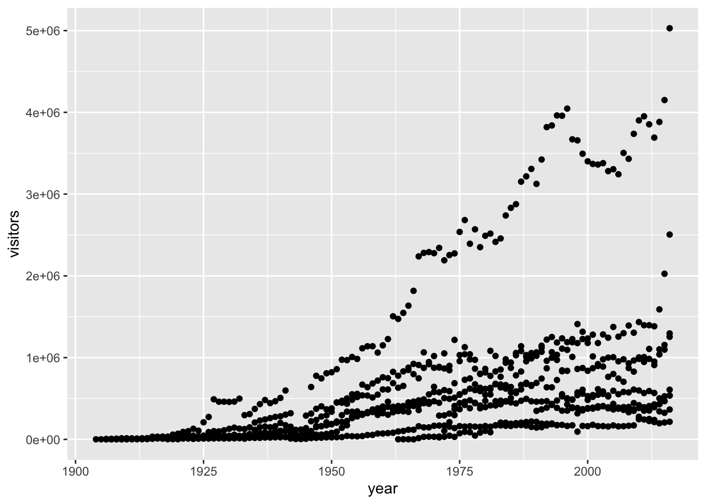
It seems immediately clear that some of the stretches of points belong to separate parks. It would be helpful to visually distinguish the parks, wouldn’t it?
Q5: Mapping park name onto the aesthetics
Duplicate the scatterplot from above, but make the color of points vary with the park name.
Much nicer! And now we can start to see some differences between parks, for instance, Yosemite looks to be by far the most visited National Park in California.
Multi-pane graphs through facet_wrap()
We can also separate out categorical data that exists in the dataset into separate panels of graphs that ggplot calls “facets”. That might make viewing the separate parks a bit easier. We do this with the facet_wrap() or facet_grid functions. We’ll use the facet_wrap() function today; facet_grid() is a better choice if you want the columns and rows of the facets to represent different things (but don’t worry too much about it - I still get confused on which one to use).
Within the function, put the variable name you want to facet followed by a ~, and then a .: facet_wrap(variable ~ .). The . is a placeholder for a second variable (i.e. its presence indicates that we are only faceting by one variable).
ggplot(data = ca_np, mapping = aes(x = year, y = visitors)) +
geom_point(aes(color = park_name)) +
facet_wrap(park_name ~ .)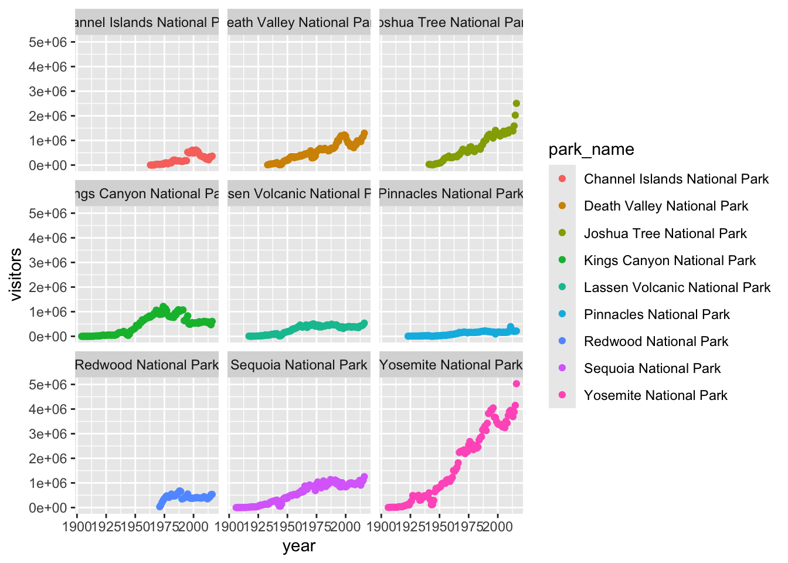
This makes it easier to see individual trends per park, (though it comes at the expense of graph size, with much smaller panels). Something else we can modify is the extent of the y-axis. As you can see, the, the scale of the y axis is fixed here; the visitors to Yosemite go up to 5000000, which makes the trends in the much less popular parks, like Pinnacles, appear flat. We can change the scales by changing the default input to the scales = argument. In this case, let’s make the y-axis “free” instead of “fixed”
ggplot(data = ca_np, mapping = aes(x = year, y = visitors)) +
geom_point(aes(color = park_name)) +
facet_wrap(park_name ~ ., scales = "free_y")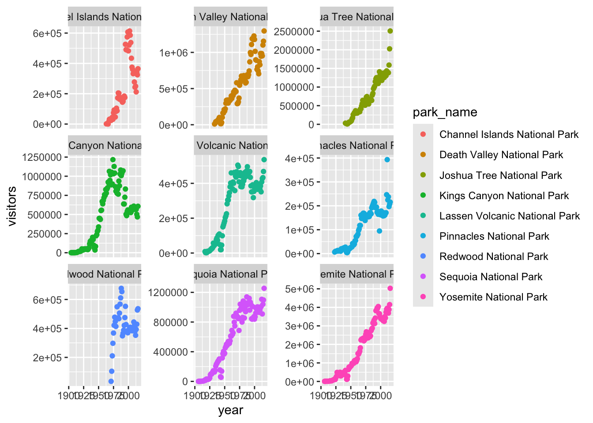
This makes the dynamics for the less popular parks much more clear, but be careful! Now, every y-axis has a different scale, which will make park-to-park comparisons difficult or even misleading: Pinnacles and Yosemite now look very similar at first glance if you don’t do the mental math while looking at the y-axis values.
Abalone landings data
In this next part of the activity, you will take what you have learned - from reading in data to modifying graphs - and apply it to a new dataset about abalone landings in California: abalone_landings.csv. Work together to do the three things below, and come to us if you have any questions.
Q6 Write a research question
Explore this dataset a little bit and then write a research question that you would like to answer.
Q7 Make a graph to answer your question
Use what you have learned to make a graph to answer that question. Try and add a personal twist to the graph (but no stress - the next activity will be all about customizing graphs and making them prettier/more readable!).
After you have made a graph, write 1) a sentence or two about what you have learned from the graph and 2) a follow-up research question (is there additional data that you might want to acquire for your follow-up question?).
Q8 Export the graph
Use your expert googling skills to figure out how to export a graph from RStudio! (hint: ggsave()). After you’ve done that, paste your research question, graph, what you learned, and your follow-up question into this slide deck: https://docs.google.com/presentation/d/1wAGmbArAW2YKmufrBbzCQ3BcDdwDknzgoRHYEmFXJko/edit?usp=sharing